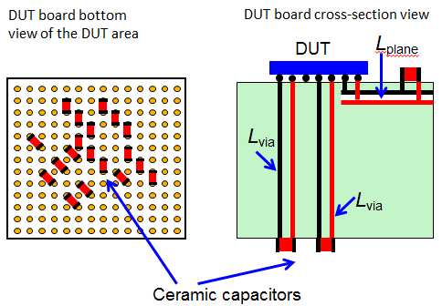
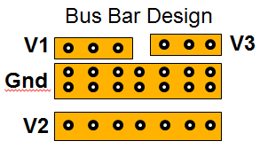
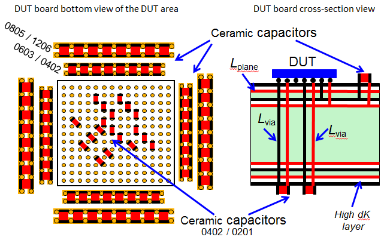

Ceramic capacitor placement
Preferred locations
One of the best locations to place the smallest capacitors, which have the fastest response time, is right underneath the DUT pins - on the tester side of the DUT board.
The typical DUT board is 3.5. to 7 mm thick. Therefore, this is the smallest distance at which you can have the first capacitors (see also Low inductance power plane and socket design).
This placement provides the lowest inductance to the ceramic capacitors (which is your primary concern for ceramic capacitors, see also Practical tips for selecting PDN capacitors).

Another excellent location for the smallest capacitors is next to the DUT pin's ball area - on the DUT side of the DUT board.
Bus bar design
Add various-sized bus bars close to the DUT. This increases your flexibility to add different types of capacitors if PDN-tuning becomes necessary.

Layers and banks
The Lplane of a buried capacitive layer at the top of a DUT board, with topside decoupling capacitors, could be actually lower then Lvia for long DUT board vias.
Banks of different size and value ceramic capacitors around the edge of the DUT, along with small ceramic capacitors placed directly on the DUT BGA vias on the tester side, provide the lowest inductance for high current applications.
Use multiple pairs of power-ground layers, both on the DUT side and on the tester side of the DUT board, with high dielectric constant (dK). You can improve this effect by using the thinnest core material between power plane and ground plane (see also Power planes stack-up).

Functional changes
- Introduced in SmarTest 7.2.2